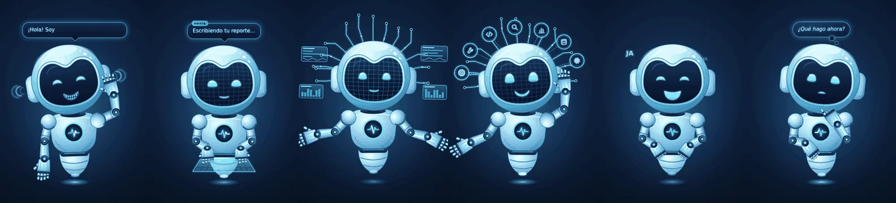
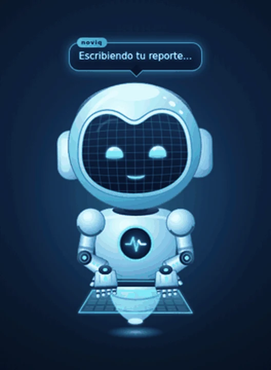

El agente de IA que programa en tu propia computadora.
NoviQ escribe los archivos, ejecuta el programa, lee los errores y los corrige. Usa modelos en la nube o modelos locales con Ollama y LM Studio.
- Gratis para uso personal
- Modelos en la nube o locales
- Pide permiso en acciones delicadas
- Español e inglés

Proveedores de IA que puedes conectar
Qué hace, hoy
Estas son las funciones que existen en el programa actual.
62 herramientas
Archivos, búsqueda en el código, PowerShell, Python, Linux, procesos, HTTP, búsqueda y lectura web, imágenes, captura de pantalla, navegador automatizado y más.
Plan antes de actuar
Puedes editar o aprobar el plan. Si no haces nada, se aprueba solo tras una cuenta regresiva.
Se prueba a sí mismo
La herramienta diagnosticar revisa el proyecto con archivo y línea; probar_web prueba webs y juegos en un navegador invisible.
Guardián de razonamiento
Si un modelo piensa demasiado sin actuar o entra en bucle, NoviQ lo corta y lo obliga a actuar.
Escalado al modelo más capaz
Si el agente se atasca, el trabajo pasa al modelo más capaz que tengas habilitado.
Trabajo que no se pierde
Guarda el objetivo, el plan, lo hecho y los errores. Si un modelo falla, el siguiente continúa desde ahí.
IA local
Ollama y LM Studio, con el contexto ajustado a la memoria de tu equipo. Tu código no sale de tu PC.
Seguridad
Modos de permiso, copias y puntos de restauración, borrado a la Papelera, escáner de secretos y bóveda de claves.
Proveedores y MCP
NVIDIA, Gemini, OpenAI, Anthropic, OpenRouter, Groq y más. Servidores MCP con el mismo formato que Claude Desktop.
Pídele más mientras trabaja
Si escribes algo mientras la IA trabaja, entra en la bandeja y se integra a su plan en el siguiente paso, sin detenerla. En la ventana el botón cambia a «📥 Agregar».
Conversaciones que no se mezclan
Cada pedido va a su lugar: sigue el tema, retoma otra conversación, abre una nueva o trabaja en el proyecto que nombras. Con el avatar y Telegram decide solo.
Así se ve el programa
Construyendo en vivo
El avatar: noviq-avatar
Un robot que vive encima de cualquier programa, con fondo transparente. Tiene su propia mente, memoria, personalidad, voz, oído, herramientas y API. Funciona solo, con NoviQ o desde otra aplicación.


Qué hace en cada momento
- Empieza un trabajo: se despierta, pone cara de concentrado y escribe en su panel.
- Usa herramientas: muestra un icono según la herramienta: código, lupa, terminal o web.
- Avanza las tareas: una tableta con barra de progreso y la tarea actual.
- Pide permiso o ayuda: lo delicado se aprueba respondiendo sí o no, sin decir su nombre.
- Termina: dice «¡Ya terminé!» y pregunta qué más hacemos.
Mente propia
Responde al instante la hora, recordatorios y agenda. Para lo demás usa el modelo que tengas configurado.
Memoria permanente
Guarda tu nombre, lo que le cuentas, planes y recordatorios. Se guarda en su propio archivo de memoria.
Personalidad combinable
Hasta cuatro rasgos (curioso, tranquilo, profesor, sarcástico y más) que cambian su cara, su ritmo y su tono.
Voz y oído
Habla con sus propias voces y escucha siempre, pero solo reacciona cuando dices su nombre (o según lo configures).
API y MCP
API HTTP y WebSocket compatible con OpenAI (/v1/chat/completions) y servidor MCP para otras aplicaciones.
Herramientas propias
Buscar y leer en internet, abrir webs, carpetas y programas, portapapeles, recordatorios y calculadora.
Nota: el avatar está diseñado para Windows (usa sus rutas, sus voces y su bóveda de claves). En Linux y macOS, el programa se ejecuta con iniciar.sh, pero el avatar no está pensado para esos sistemas.
Ejecútalo desde el código
Todavía no hay instaladores publicados. Necesitas Python 3.10 o superior.
Windows
Descarga el repositorio (botón Code → Download ZIP) o clónalo. Luego haz doble clic en iniciar.bat.
Linux y macOS
En la carpeta del proyecto ejecuta bash iniciar.sh.
Primer uso
Entra en Ajustes → Proveedores y claves, pega la clave de un proveedor (o conecta Ollama / LM Studio) y empieza a conversar.
git clone https://github.com/JUXN1988/noviark.git
cd noviark
# Windows: doble clic en iniciar.bat
# Linux / macOS:
bash iniciar.shPara ejecutarlo a mano: python app.py y abre http://127.0.0.1:7860.
Permisos y copias antes de actuar
Estas son las protecciones que tiene el código actual.
- Tres modos de permiso: preguntar (el de fábrica), auto_seguro y auto.
- Puntos de restauración y herramienta para deshacer cambios.
- Los archivos borrados van a la Papelera, no se eliminan de forma directa.
- Escáner de secretos para detectar claves expuestas en el código.
- Con modelos locales, tu código no sale de tu computadora.
- Bóveda de claves: en Windows se cifra con DPAPI. En Linux y macOS se guarda ofuscada con permisos 600, no cifrada.
Gratis para uso personal
NoviQ es gratis para uso personal. El uso comercial (de empresas, organizaciones, microempresas o de trabajo por cuenta propia que genere ingresos) requiere una licencia comercial de pago: abre un issue con la etiqueta business. No es software de código abierto: el código es visible, pero el uso comercial es de pago.
Preguntas frecuentes
¿Mi código sale de mi computadora?
Con modelos locales (Ollama o LM Studio), no. Con modelos en la nube, se envía al proveedor que elijas el texto necesario para cada tarea.
¿Necesito una GPU?
No es obligatoria. Con modelos en la nube funciona en cualquier equipo; los modelos locales dependen de la memoria de tu computadora.
¿Hay instalador?
Todavía no. Por ahora se ejecuta desde el código con iniciar.bat (Windows) o iniciar.sh (Linux y macOS).
¿Puede hacer algo peligroso sin preguntar?
Depende del modo de permiso. El modo de fábrica pregunta antes de actuar, y los puntos de restauración permiten volver atrás.
Comentarios y sugerencias
El proyecto está en actualización. Tu opinión ayuda mucho: los errores y las mejoras se revisan en GitHub.